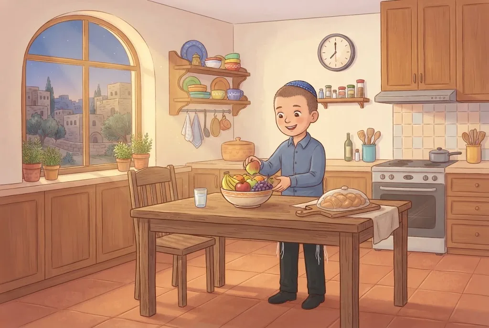
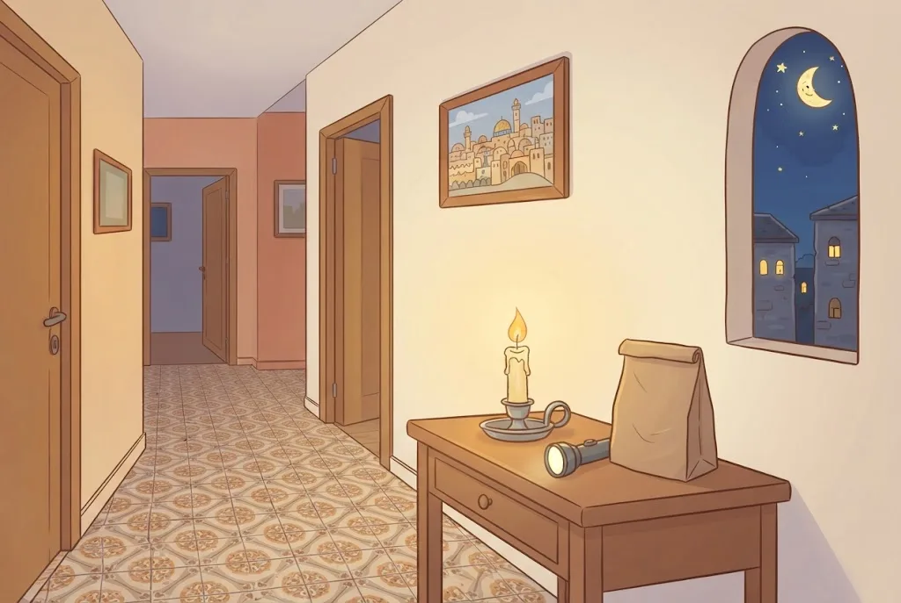

🌙בְּלֵיל י״ד בְּנִיסָן
בּוֹדְקִים חָמֵץ בִּתְחִלַּת הַלַּיְלָה שֶׁל י״ד בְּנִיסָן – הַלַּיְלָה שֶׁלִּפְנֵי עֶרֶב פֶּסַח. בַּלַּיְלָה כֻּלָּם בַּבַּיִת, וְאוֹר הַנֵּר בּוֹלֵט וּמֵאִיר הֵיטֵב אֶת הַחוֹרִים וְהַסְּדָקִים. קֹדֶם מִתְפַּלְּלִים עַרְבִית, וְאַחַר כָּךְ מְמַהֲרִים לִבְדֹּק.
הַחוֹבָה לִבְדֹּק הִיא עַל בַּעַל הַבַּיִת. אִם קָשֶׁה לוֹ, הוּא מְמַנֶּה אֶת אִשְׁתּוֹ אוֹ אֶחָד מִבְּנֵי הַבַּיִת הַגְּדוֹלִים – בְּמִצְוָה זוֹ אֵין הֶבְדֵּל בֵּין אִישׁ לְאִשָּׁה. וּבְנֵי הַבַּיִת וּבְנוֹת הַבַּיִת יְכוֹלִים לַעֲזֹר: עוֹמְדִים לְיָדוֹ בַּבְּרָכָה, עוֹנִים ״אָמֵן״, וּמִתְפַּזְּרִים לִבְדֹּק בְּכָל הַבַּיִת.
💛 אַהֲבַת הַשֵּׁם: כְּשֶׁכָּל הַמִּשְׁפָּחָה יוֹצֵאת יַחַד לְחַפֵּשׂ, כֻּלָּם מְכִינִים אֶת הַבַּיִת לִכְבוֹד ה׳ – וְהַבְּדִיקָה הוֹפֶכֶת לְמִצְוָה מְשַׁמַּחַת.
⏳לִפְנֵי הַבְּדִיקָה
חֲצִי שָׁעָה לִפְנֵי זְמַן הַבְּדִיקָה לֹא מַתְחִילִים סְעוּדָה אוֹ עֲבוֹדָה, שֶׁמָּא נִמָּשֵׁךְ וְנִשְׁכַּח לִבְדֹּק. מֻתָּר לֶאֱכֹל פֵּרוֹת אוֹ עוּגָה בְּדֶרֶךְ אֲרָעִי, וְלַעֲשׂוֹת עֲבוֹדָה קַלָּה וּקְצָרָה.
כְּשֶׁהִגִּיעַ זְמַן הַבְּדִיקָה – לֹא אוֹכְלִים כְּלוּם וְלֹא מַתְחִילִים לִלְמֹד, אֶלָּא מְמַהֲרִים לִבְדֹּק. שִׁעוּר קָבוּעַ לָרַבִּים לֹא מְבַטְּלִים, וּבְסוֹפוֹ מַזְכִּירִים זֶה לָזֶה לְמַהֵר לִבְדֹּק.
💛 אַהֲבַת הַשֵּׁם: הַזְּרִיזוּת בַּמִּצְוָה מַרְאָה כַּמָּה הִיא חֲשׁוּבָה לָנוּ. מִי שֶׁמְּמַהֵר לַמִּצְוָה – מְמַהֵר אֶל ה׳.
🙏הַבְּרָכָה
לִפְנֵי הַבְּדִיקָה מְבָרְכִים: ״בָּרוּךְ אַתָּה ה׳... אֲשֶׁר קִדְּשָׁנוּ בְּמִצְווֹתָיו וְצִוָּנוּ עַל בִּעוּר חָמֵץ״. אַף שֶׁשּׂוֹרְפִים אֶת הֶחָמֵץ רַק לְמָחֳרָת, בַּבְּדִיקָה כְּבָר מַתְחִילִים אֶת הַבִּעוּר.
בֵּין הַבְּרָכָה לִתְחִלַּת הַבְּדִיקָה אָסוּר לְדַבֵּר. וְגַם בְּמֶשֶׁךְ הַבְּדִיקָה לֹא מְדַבְּרִים בְּעִנְיָנִים אֲחֵרִים, כְּדֵי לְהִתְרַכֵּז.
💛 אַהֲבַת הַשֵּׁם: ״אֲשֶׁר קִדְּשָׁנוּ בְּמִצְווֹתָיו״ – גַּם חִפּוּשׂ פֵּרוּרִים בַּבַּיִת הוּא מַעֲשֶׂה שֶׁל קְדֻשָּׁה, כִּי ה׳ צִוָּה עָלָיו.
🏠אֵיפֹה בּוֹדְקִים?
בּוֹדְקִים כָּל מָקוֹם שֶׁלִּפְעָמִים נִכְנָסִים אֵלָיו עִם חָמֵץ: הַמִּטְבָּח, הַסָּלוֹן, הַחֲדָרִים, הַמִּרְפֶּסֶת וְהַמַּחְסָן – וְגַם אֶת הַמְּכוֹנִית וְאֶת הַתִּיקִים. בְּבַיִת שֶׁיֵּשׁ בּוֹ יְלָדִים קְטַנִּים בּוֹדְקִים גַּם אֶת הַכִּיסִים שֶׁלָּהֶם, וְאֶת הָאֲרוֹנוֹת שֶׁהֵם מַגִּיעִים אֲלֵיהֶם.
מָקוֹם צִבּוּרִי שֶׁל הֶפְקֵר – לֹא צָרִיךְ לִבְדֹּק. אֲבָל בֵּית כְּנֶסֶת צָרִיךְ בְּדִיקָה, כִּי לִפְעָמִים אוֹכְלִים בּוֹ, וְלִפְעָמִים נִכְנָסִים אֵלָיו יְלָדִים עִם חָמֵץ.
💛 אַהֲבַת הַשֵּׁם: הַבְּדִיקָה עוֹבֶרֶת בְּכָל מָקוֹם שֶׁלָּנוּ – גַּם בַּמְּכוֹנִית וּבַכִּיס. כָּךְ כָּל הַחַיִּים שֶׁלָּנוּ מִתְכּוֹנְנִים לַחַג.
🔦נֵר אוֹ פַּנָּס
חֲכָמִים תִּקְּנוּ לִבְדֹּק לְאוֹר נֵר, כִּי אוֹרוֹ מְמֻקָּד. נוֹהֲגִים בְּנֵר שַׁעֲוָה, שֶׁכִּמְעַט אֵינוֹ מְטַפְטֵף. לֹא בּוֹדְקִים בַּ״אֲבוּקָה״ – נֵר שֶׁיֵּשׁ לוֹ שְׁתֵּי פְּתִילוֹת אוֹ יוֹתֵר – כִּי הַלֶּהָבָה גְּדוֹלָה, וְהַבּוֹדֵק יִפְחַד לִשְׂרֹף דְּבָרִים וְלֹא יִתְרַכֵּז.
גַּם בְּפַנָּס מֻתָּר לִבְדֹּק, כִּי גַּם אוֹרוֹ מְמֻקָּד. כָּל אֶחָד רַשַּׁאי לִבְחֹר: נֵר כְּמִנְהַג יִשְׂרָאֵל מִדּוֹרֵי דּוֹרוֹת, אוֹ פַּנָּס שֶׁאוֹרוֹ טוֹב יוֹתֵר. אֶפְשָׁר גַּם לְהַתְחִיל בְּנֵר וּלְהַמְשִׁיךְ בְּפַנָּס.
💛 אַהֲבַת הַשֵּׁם: יֵשׁ מְהַדְּרִים לִבְדֹּק דַּוְקָא בְּנֵר, כְּמוֹ אֲבוֹתֵינוּ. וּבְכָל דֶּרֶךְ שֶׁבּוֹחֲרִים – הָעִקָּר לְחַפֵּשׂ בְּעֵינַיִם פְּקוּחוֹת וּבְלֵב שָׁלֵם.
🔀דֵּעוֹת וּמִנְהָגִים בִּבְדִיקַת חָמֵץ
נֵר אוֹ פַּנָּס: מִן הַדִּין מֻתָּר לִבְדֹּק בְּפַנָּס, וְיֵשׁ מְהַדְּרִים לִבְדֹּק דַּוְקָא בְּנֵר, כְּמוֹ שֶׁנָּהֲגוּ יִשְׂרָאֵל מִדּוֹרֵי דּוֹרוֹת. עֲשָׂרָה פְּתִיתִים: יֵשׁ שֶׁכָּתְבוּ שֶׁהֵם נוֹעֲדוּ כְּדֵי שֶׁיִּשָּׁאֵר חָמֵץ וְלֹא יִשְׁכַּח לְבַטֵּל, וְיֵשׁ שֶׁבֵּאֲרוּ – כְּדֵי שֶׁהַבּוֹדֵק לֹא יִתְרַשֵּׁל.
מָה מְחַפְּשִׂים? יֵשׁ מַחְמִירִים שֶׁצָּרִיךְ לְחַפֵּשׂ כָּל פֵּרוּר רָאוּי לַאֲכִילָה. הָרַב מֶלָמֵד פּוֹסֵק כַּמְּקִלִּים: בַּבַּיִת מְחַפְּשִׂים חֲתִיכוֹת בְּגֹדֶל כַּזַּיִת, כִּי חוֹבַת הַבְּדִיקָה מִדִּבְרֵי חֲכָמִים. וְכֵן בְּבַיִת שֶׁנֻּקָּה הֵיטֵב וּבַסְּפָרִים – יֵשׁ מַחְמִירִים, וְהַמִּנְהָג לְהָקֵל.
💛 אַהֲבַת הַשֵּׁם: כְּשֶׁיֵּשׁ כַּמָּה דֵּעוֹת, כָּל אַחַת מֵהֶן נוֹבַעַת מֵאַהֲבָה לַמִּצְוָה. אֲנַחְנוּ לוֹמְדִים אֶת כֻּלָּן – וּמְכַבְּדִים כָּל מִי שֶׁנּוֹהֵג כְּמוֹ אֲבוֹתָיו.
🧽נִקִּינוּ – וּבְכָל זֹאת בּוֹדְקִים
מָקוֹם שֶׁנִּקּוּ הֵיטֵב לְפֶסַח וְלֹא הִכְנִיסוּ אֵלָיו חָמֵץ – הַמִּנְהָג לַעֲבֹר עָלָיו בִּבְדִיקָה קַלָּה (וְיֵשׁ מַחְמִירִים לִבְדֹּק גַּם אָז בְּכָל הַחוֹרִים וְהַסְּדָקִים). אֲבָל בְּכָל מִקְרֶה עוֹבְרִים עַל כָּל הַבַּיִת וּבוֹדְקִים בִּבְרָכָה: אוּלַי שָׁכְחוּ פִּנָּה אוֹ מְגֵרָה, וְאֶת הַמָּקוֹם שֶׁאָכְלוּ בּוֹ – בְּוַדַּאי צָרִיךְ לִבְדֹּק.
בַּבַּיִת מְחַפְּשִׂים חֲתִיכוֹת חָמֵץ בְּגֹדֶל כַּזַּיִת. אֲבָל שֻׁלְחַן הָאֹכֶל, הַשַּׁיִשׁ וְאֲרוֹנוֹת הַמִּטְבָּח – מְנַקִּים עַד שֶׁלֹּא נִשְׁאָר אֲפִלּוּ פֵּרוּר, כִּי הֵם נוֹגְעִים בָּאֹכֶל שֶׁל פֶּסַח.
💛 אַהֲבַת הַשֵּׁם: הַנִּקָּיוֹן שֶׁל כָּל הַמִּשְׁפָּחָה לִקְרַאת פֶּסַח הוּא חֵלֶק מֵהַמִּצְוָה. כָּל פִּנָּה נְקִיָּה הִיא הֲכָנָה לִקְרַאת הַחַג הַקָּדוֹשׁ.
📖וּמָה עִם הַסְּפָרִים?
לְדַעַת כַּמָּה אַחֲרוֹנִים (הַחֲזוֹן אִישׁ) צָרִיךְ לִבְדֹּק דַּף אַחַר דַּף אֶת הַסְּפָרִים שֶׁלָּמְדוּ בָּהֶם כָּל הַשָּׁנָה. הַמִּנְהָג לְהָקֵל, וְהָרַב מֶלָמֵד כּוֹתֵב שֶׁזּוֹ חֻמְרָה יְתֵרָה שֶׁעֲלוּלָה לִגְרֹם לְבִטּוּל תּוֹרָה. אֲבָל לְכָל הַדֵּעוֹת לֹא מַנִּיחִים סְפָרִים כָּאֵלֶּה בְּפֶסַח עַל שֻׁלְחַן הָאֹכֶל, שֶׁמָּא יִפֹּל מֵהֶם פֵּרוּר לָאֹכֶל.
לוֹמְדִים בָּהֶם עַל שֻׁלְחָן אַחֵר. וַאֲרוֹן סְפָרִים שֶׁיְּלָדִים אוּלַי הֶחְבִּיאוּ בּוֹ אֹכֶל – בּוֹדְקִים בֵּין הַסְּפָרִים וּמֵאֲחוֹרֵיהֶם.
💛 אַהֲבַת הַשֵּׁם: הַתּוֹרָה לֹא נֶעֱצֶרֶת בְּפֶסַח. שׁוֹמְרִים עַל הֶחָג – וּמַמְשִׁיכִים לִלְמֹד בְּשִׂמְחָה.
🍪עֲשָׂרָה פְּתִיתִים
נוֹהֲגִים לְהַחְבִּיא בַּבַּיִת פְּתִיתֵי חָמֵץ לִפְנֵי הַבְּדִיקָה, וְהָאֲרִ״י נָהַג לְהָנִיחַ עֲשָׂרָה. בִּזְכוּתָם הַבּוֹדֵק אֵינוֹ מִתְרַשֵּׁל, וְנִשְׁאָר לוֹ חָמֵץ לְבַעֵר. וְגַם מִי שֶׁלֹּא מָצָא כְּלוּם – הַבְּרָכָה שֶׁלּוֹ אֵינָהּ לְבַטָּלָה.
טוֹב שֶׁמִּי שֶׁמַּחְבִּיא אֶת הַפְּתִיתִים יִרְשֹׁם אֵיפֹה הֶחְבִּיא אוֹתָם, כְּדֵי שֶׁאִם לֹא יִמָּצְאוּ – יוֹצִיאוּ אוֹתָם וִיבַעֲרוּ.
💛 אַהֲבַת הַשֵּׁם: זֶה מִנְהָג עַתִּיק שֶׁל עַם יִשְׂרָאֵל, וְאֵין לְבַטֵּל אוֹתוֹ. הַמִּנְהָג מְמַלֵּא אֶת הַמִּצְוָה בְּחִיּוּת וּבְשִׂמְחָה.

🗑️חָמֵץ שֶׁקָּשֶׁה לְהוֹצִיא
פְּרוּסָה שֶׁנִּתְקְעָה מֵאֲחוֹרֵי אֲרוֹן קִיר, וְאִי אֶפְשָׁר לְהוֹצִיא אוֹתָהּ בְּלִי לְפָרֵק אֶת הָאָרוֹן – מַסְפִּיק לְבַטֵּל אוֹתָהּ. וְחָמֵץ שֶׁקָּבוּר תַּחַת יוֹתֵר מִשְּׁלֹשָׁה טְפָחִים שֶׁל אֲבָנִים אוֹ עָפָר – נֶחְשָׁב מְבֹעָר, וּמְבַטְּלִים אוֹתוֹ.
חָמֵץ בְּפַח הָאַשְׁפָּה שֶׁבַּחֲצֵר הַבַּיִת – לְכַתְּחִלָּה שׁוֹפְכִים עָלָיו אֶקוֹנוֹמִיקָה, עַד שֶׁגַּם כֶּלֶב לֹא יֹאכַל אוֹתוֹ. בְּפַח שֶׁל הָעִירִיָּה בָּרְחוֹב – אֵין צֹרֶךְ לְבַעֵר.
💛 אַהֲבַת הַשֵּׁם: הַהֲלָכָה דּוֹרֶשֶׁת מֵאִתָּנוּ מַאֲמָץ אֲמִתִּי – אֲבָל לֹא לְהָרֹס אֶת הַבַּיִת. ה׳ נָתַן לָנוּ תּוֹרָה שֶׁאֶפְשָׁר לְקַיֵּם בְּשִׂמְחָה.
🧠 בְּדֹק אֶת עַצְמְךָ
חֲצִי שָׁעָה לִפְנֵי זְמַן בְּדִיקַת הֶחָמֵץ. מָה מֻתָּר לַעֲשׂוֹת?
💡 חֲכָמִים אָסְרוּ לְהַתְחִיל סְעוּדָה אוֹ מְלָאכָה חֲצִי שָׁעָה לִפְנֵי הַבְּדִיקָה, שֶׁמָּא נִמָּשֵׁךְ וְנִשְׁכַּח. אֲכִילָה קְצָרָה שֶׁל פְּרִי אוֹ עוּגָה – מֻתֶּרֶת.
פְּרוּסָה נִתְקְעָה מֵאֲחוֹרֵי אֲרוֹן קִיר, וְאִי אֶפְשָׁר לְהוֹצִיא אוֹתָהּ בְּלִי לְפָרֵק. מָה עוֹשִׂים?
💡 חָמֵץ שֶׁאִי אֶפְשָׁר לְהוֹצִיא בְּלִי לְפָרֵק אֶת הָאָרוֹן – מַסְפִּיק לְבַטֵּל אוֹתוֹ, כְּמוֹ חָמֵץ שֶׁקָּבוּר עָמֹק תַּחַת אֲבָנִים.
אַבָּא חָלָה בְּלֵיל י״ד וְאֵינוֹ יָכוֹל לִבְדֹּק חָמֵץ. מָה עוֹשִׂים?
💡 חוֹבַת הַבְּדִיקָה עַל בַּעַל הַבַּיִת, וּכְשֶׁקָּשֶׁה לוֹ – הוּא מְמַנֶּה אֶת אִשְׁתּוֹ אוֹ אֶחָד מִבְּנֵי הַבַּיִת הַגְּדוֹלִים, שֶׁאֶפְשָׁר לִסְמֹךְ עָלָיו שֶׁיִּבְדֹּק כָּרָאוּי. בְּמִצְוָה זוֹ אֵין הֶבְדֵּל בֵּין אִישׁ לְאִשָּׁה, וְהַבּוֹדֵק מְבָרֵךְ.
📚 עוֹד חָמְרֵי לִמּוּד עַל הֲלָכָה – חִנָּם, בַּמַּאֲגָר הַקּוֹל הַחֲמִישִׁי:
kol-toda.co.il/halacha
הַמַּאֲגָר הַמָּלֵא: kol-toda.co.il
הַמַּאֲגָר הַמָּלֵא: kol-toda.co.il